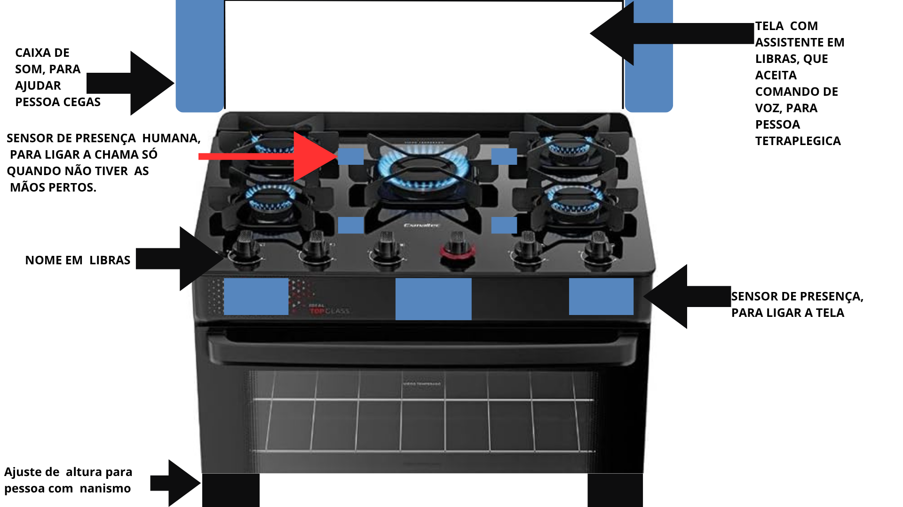

Meu nome é [seu nome] e este projeto nasceu da reflexão sobre como um objeto tão comum quanto um fogão
pode excluir, sem intenção, quem tem alguma deficiência ou limitação. Como projetista, entendo que
acessibilidade não é um recurso extra: é parte do design desde o início. Cada decisão aqui — do sensor
de presença ao assistente em Libras — nasceu de perguntar "quem ficaria de fora se eu não pensasse nisso?".
Nova Interface do Fogão

Interface acessível do fogão com seus pontos de interação inteligente
Conceito
O fogão foi repensado como um sistema que se adapta ao usuário, e não o contrário. Em vez de comandos
fixos que exigem visão, audição e mobilidade plenas, a interface combina reconhecimento de presença,
comando de voz e comunicação visual em Libras para que diferentes pessoas consigam usá-lo com segurança
e autonomia.
Necessidades atendidas
Pessoas cegas ou com baixa visão: caixa de som que anuncia e confirma cada ação por voz.
Pessoas surdas: nome do fogão e instruções apresentados em Libras, além de alertas visuais.
Pessoas tetraplégicas: tela com assistente em Libras que também aceita comando de voz, eliminando a necessidade de tocar em botões físicos.
Pessoas com nanismo: ajuste de altura na base do fogão, adaptando o alcance ao usuário.
Segurança de todos os usuários: sensor de presença humana que só libera a chama quando não há mãos próximas às bocas, evitando queimaduras acidentais.
Prevenção de acidentes por esquecimento: o sistema reconhece o tempo médio de cozimento de cada alimento e desliga a chama automaticamente ao final desse tempo, eliminando o risco de fogo aceso sem supervisão.
Resposta rápida em emergências: em caso de situação de risco, o sistema envia alerta automático para o celular do usuário, para um parente mais próximo e para os bombeiros.
Princípios de usabilidade e acessibilidade aplicados
Feedback imediato: a chama só acende após a confirmação de segurança do sensor de presença.
Redundância sensorial: nenhuma informação depende de um único sentido — cada ação tem retorno
visual, sonoro e/ou em Libras. Comportamento previsível: os sensores tornam o funcionamento
previsível, reduzindo o risco de erro ou acidente mesmo para quem usa o fogão pela primeira vez.
Segurança proativa: além de reagir a comandos, o sistema monitora e age sozinho quando identifica
risco — reconhece o tempo médio de cozimento de cada alimento e desliga a chama automaticamente
ao final desse tempo, e dispara um alerta automático (para o celular do usuário, para um parente
próximo e para os bombeiros) caso identifique uma situação de emergência.
Cores, formas, sons e texturas
Os destaques em azul marcam os pontos de interação inteligente (sensores e tela), contrastando
com o preto do corpo do fogão — isso ajuda inclusive usuários com baixa visão a localizar
rapidamente onde estão os comandos. Os sinais sonoros da caixa de som e os sinais visuais da
tela em Libras foram pensados para nunca competir entre si, garantindo que cada grupo de
usuários receba a informação da forma que melhor consegue captar.
Manual de Utilização
Observação: este modelo possui forno, além das bocas de cozimento. As instruções
abaixo cobrem tanto o uso do cooktop quanto do forno.
Explicação dos botões e comandos
Elemento
Função
Botões giratórios (bocas)
Controle manual tradicional de cada boca, mantido para quem prefere o uso físico direto.
Caixa de som
Anuncia por voz cada ação realizada no fogão, para pessoas cegas ou com baixa visão.
Sensor de presença (bocas)
Só libera a chama quando não há mãos próximas às bocas.
Sensor de presença (tela)
Liga a tela automaticamente quando alguém se aproxima do fogão.
Tela com assistente em Libras
Mostra o nome do fogão e instruções em Libras; também aceita comando de voz para pessoas tetraplégicas.
Ajuste de altura (base)
Eleva ou abaixa o fogão para adequar o alcance a pessoas com nanismo ou gigantismo.
Painel do forno
Controla temperatura e tempo do forno por voz, Libras ou botão físico, com os mesmos sensores de segurança das bocas.
Como acender uma boca — passo a passo
Aproxime-se do fogão — o sensor de presença liga automaticamente a tela.
Diga em voz alta o comando "acender boca [número]" ou selecione na tela em Libras (ou gire o botão físico correspondente).
Afaste as mãos da boca escolhida: o sensor de presença confirma que está seguro e libera a chama.
A caixa de som anuncia "boca [número] acesa" para confirmar por áudio.
Informe (por voz ou na tela) o tipo de alimento que está preparando: o sistema calcula o tempo médio de cozimento e passa a monitorar automaticamente.
Como ajustar a temperatura
Com a boca já acesa, diga "aumentar" ou "diminuir chama", use o comando na tela em Libras, ou gire o botão físico.
A caixa de som confirma o novo nível de chama.
Como usar o forno — passo a passo
Aproxime-se do fogão — o sensor de presença liga automaticamente a tela.
Diga em voz alta o comando "ligar forno" ou selecione na tela em Libras (ou gire o botão físico correspondente).
Informe a temperatura desejada por voz, na tela em Libras, ou no botão físico.
A caixa de som confirma "forno ligado a [temperatura] graus".
Informe o tipo de alimento: o sistema calcula o tempo médio de forno e passa a monitorar automaticamente, desligando ao final desse tempo.
Desligamento automático e alerta de emergência
Ao final do tempo médio de cozimento do alimento informado (nas bocas ou no forno), a chama ou o forno são desligados automaticamente, mesmo sem ação do usuário.
Se o sistema identificar risco — por exemplo, chama acesa muito além do tempo esperado sem resposta do usuário — ele envia um alerta automático para o celular do usuário, para um parente mais próximo e para os bombeiros.
Dicas de segurança acessíveis
Nunca desative o sensor de presença das bocas — ele existe para evitar queimaduras.
Para pessoas com nanismo ou gigantismo, ajuste a altura da base antes do primeiro uso.
Mantenha a tela e o sensor de presença sempre limpos, para não interferir na leitura.
Confie no desligamento automático por tempo de cozimento, mas nunca se afaste totalmente da cozinha enquanto o fogão estiver em uso.
Recursos de áudio e vídeo
Faz sentido incluir esses recursos porque texto sozinho não é acessível para todos os públicos deste
projeto: uma pessoa cega não consegue ler instruções na tela, e uma pessoa surda se beneficia mais de
uma demonstração visual em Libras do que de texto escrito em português. Por isso o manual inclui:
Narração em áudio das instruções, para usuários com baixa visão:
Demonstração em Libras do passo a passo, para usuários surdos: